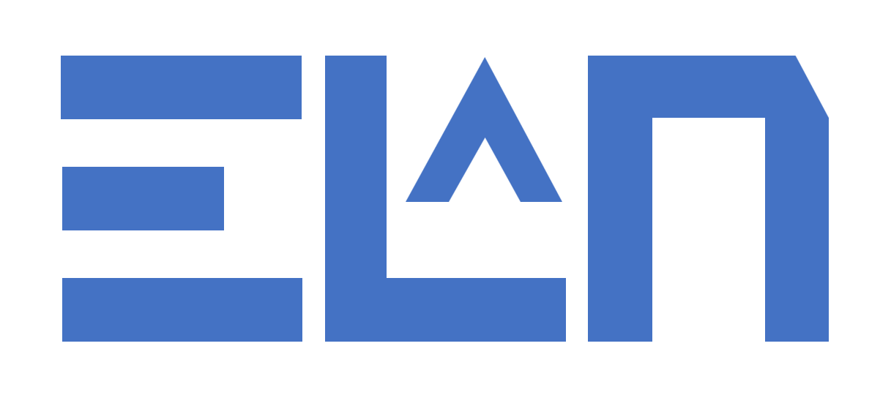

Elan
Elan:
- is a completely free online tool for teaching programming, aimed specifically:
- Key stage 4 & 5
- First year undergraduate of a computer science degree
- Programming as a supporting subject in other degrees
- can be used with the Python, VB, C#, or Java programming languages.
- supports the three principal programming paradigms - procedural, object-oriented, and function -
with switchable profiles for each.
- has a unique 'frame-based' editor that makes programming:
- easier to learn
- easier to write
- far less prone to syntax errors
- offers the option to use 'quad view' where code is entered and edited in any of the four supported
languages and translated, live, into the other three languages.
- has full support for simple block graphics, vector graphics, turtle graphics, and Html output
- has a built-in debugger, automatically showing the state of all in-scope variables at a breakpoint, with drill-down options.
- has built in comprehensive help and reference documentation - displayed in whichever programming language is active - with a relevant link (?) from each instruction.
- compiles and runs code entirely within the browser without any need to reference the server (except for documentation links)
- uses a built-in library that works identically in all languages with no need for 'import' (or 'using') statements
- is guaranteed to be 100% AI-free. It eliminates the need to type boilerplate syntax but does not suggest any specific code.
Team
Elan was conceived by Richard Pawson in May 2023.
The original design & development team consisted of Richard, Stefano Cascarini (lead technical developer), and John Stout.
From the outset we have sought regular input and feedback from recognised experts in computer science education including:
Michael Kölling and Simon Peyton Jones.
We are also reliant on volunteers to test the prototypes, write example programs, and assist with documentation and resources.
In particular, we would like to thank: Nela Brockington, Charles Wicksteed, and Bernard Boase for regular help of this kind.
If you are willing to assist in any way please get in touch...
Contact us
The Elan language source code is managed on GitHub here.
If you have questions not answered in the documentation, can offer feedback, or would like to help, please post a new thread on our Discussion forum here.